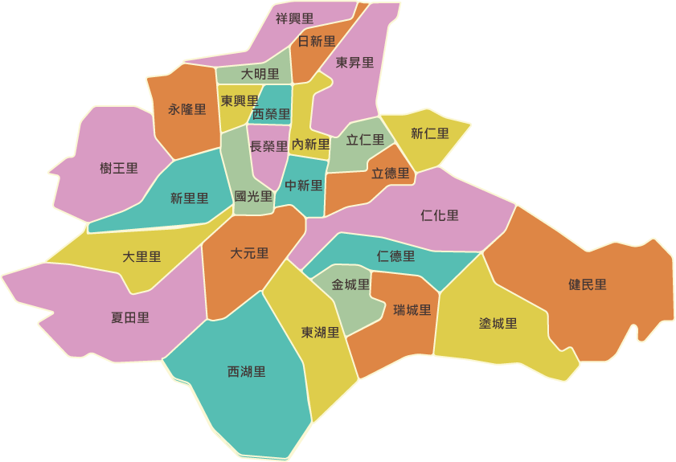

台中-大里
大里區，舊稱大里杙，後稱大里，位在臺中縣南部，東接太平市，西鄰烏日 鄉，南隔草湖溪及北溝溪與霧峰鄉相鄰，北大致以旱溪排水（舊旱溪）與臺 中市相鄰 清領時有所謂的：「一府、二鹿、三艋舺、四竹塹、五諸羅、六大里杙」早期烏溪流經大里,讓大里渡船頭在乾隆年間成為台中最繁榮的地方。此外,在臺灣歷史上有所謂三大民變，其中林爽文事件的主角林爽文， 即是大里杙莊人。大里一地在臺灣歷史上的重要性，由此可知。
大里行政區域圖
大里老街

大里杙老街就在大里市公所附近，大里福興宮的正前方。 在一百多年前的清領時期，這裡可是台灣中部著名的商店街，當時的舊街全長約兩百公尺， 可以直通大里溪畔的船運碼頭，由於當時大陸和台灣之間貿易鼎盛，台中或者南投內陸地區 的貨物往來，許多都必須經由大里的碼頭轉運，使得當時的大里成為台灣第六大商埠，當時 這裡的繁華景象，是今天難以想像的。

大里杙老街上的街屋有一個主要特色，就是亭仔腳的街屋，其街屋有分成前段的軒亭與後段的 商店及住家，彼此屋頂並不相屬。仔細觀察大里老街，亭下的柱子，並非連在磚牆上的附壁柱， 而是獨立出來的，老店面與軒亭間的橫樑，是由上方挑懸出兩塊凸出物來承接挑簷樑。

大里杙文化館建立於昭和四年(1929)，原本是日治時期保正集會所， 光復後也曾為戶政事務所與村活動中心，1999年在大里杙老街風貌再造計畫將此規劃為 <大里杙文化館>，陳列大里杙老街今昔風貌的不同以及文化展物。